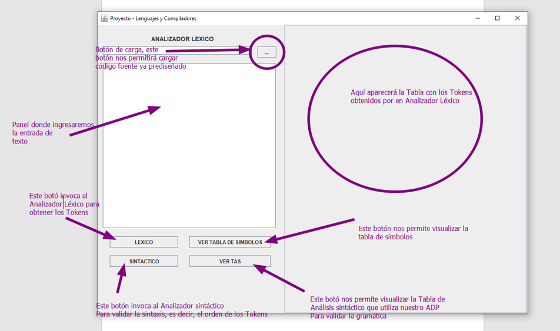
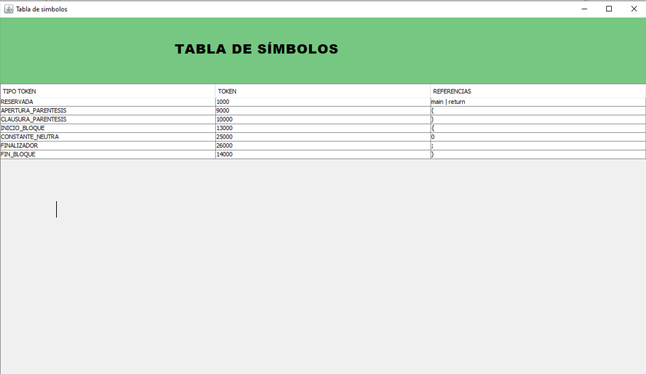
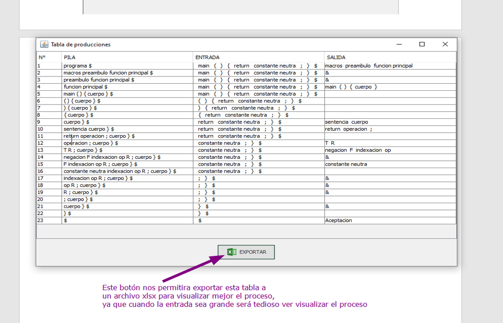

El siguiente documento sustenta todo el desarrollo del traductor para la gramática Vulcan. Este documento está divido en tres secciones: Análisis Léxico, Análisis Sintáctico y Análisis semántico. En cada sección se explicará el módulo con las clases correspondientes. Debemos precisar que este documento es un conglomerado de todos los documentos anteriores; sin embargo, está adaptado de tal forma que evita la redundancia.
También es importante decir que el software cuenta con dos módulos, es decir, dos partes. Un analizador léxico y un analizador sintáctico; el semántico se encuentra incluido dentro del sintáctico.

La clase Vista hace referencia al Menú principal. Es la primera interfaz que visualizaremos cuando ejecutemos el programa. En esta interfaz deberemos ingresar un texto o podemos cargarlo a partir de un archivo de texto plano con el botón de carga. Luego debemos invocar al Analizador Léxico para obtener los tokens y por último debemos llamar al sintáctico para validar la sintaxis. Los componentes se explican en la siguiente imagen

La clase TablaSimbolos o SymbolTable es una clase para visualizar la tabla de símbolos. Aquí se muestra el resumen de todos los tokens leídos por nuestro Analizador Léxico. En esta clase no tenemos nada que explicar ya que es solo para visualizar, es decir no hay interacción con el usuario.

Es la interfaz invocada después de finalizar el análisis sintáctico, este se mostrará todo el proceso que ha realizado el programa para determinar si la entrada es válida o no. En la siguiente imagen se muestra la interfaz mostrando el proceso para validar cierta entrada.